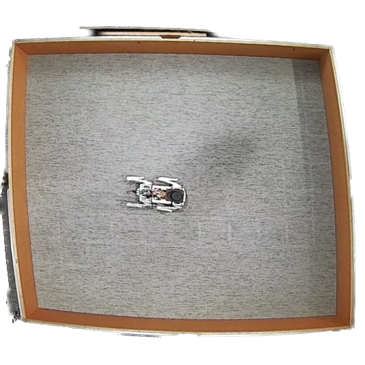
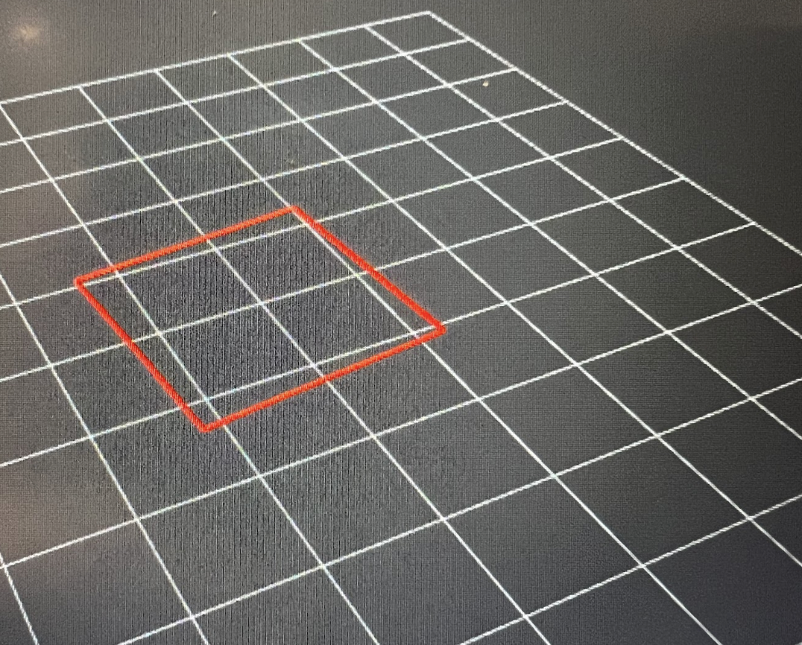
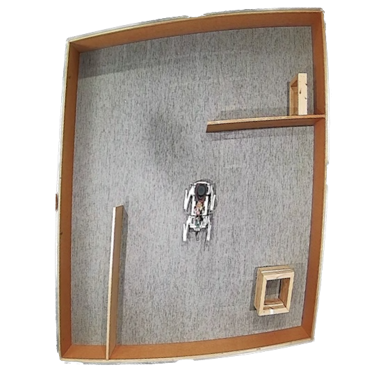
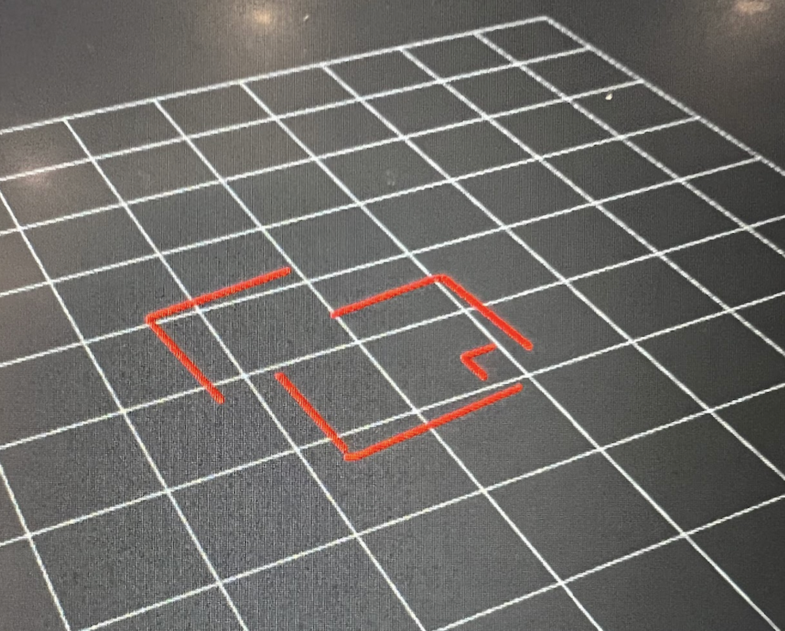
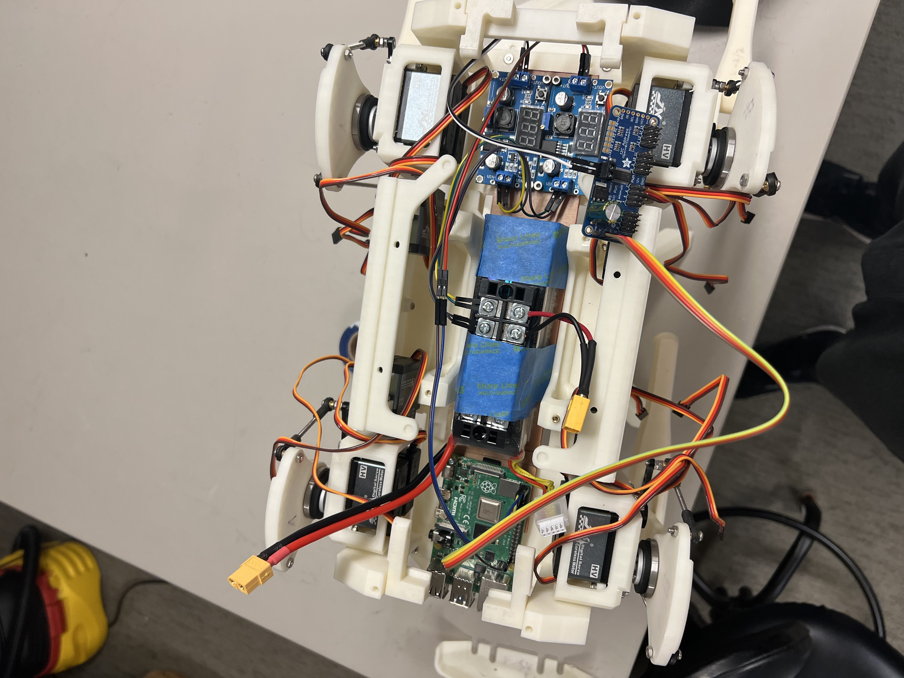
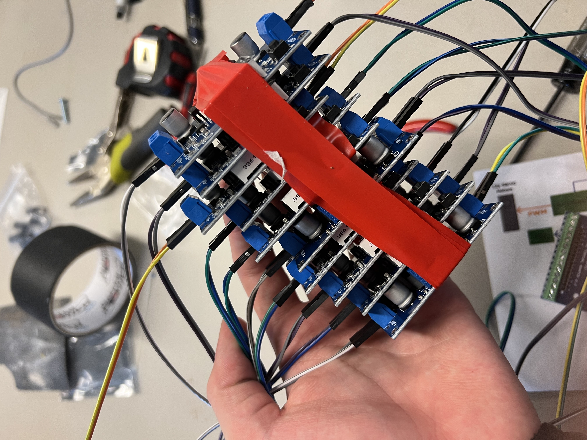
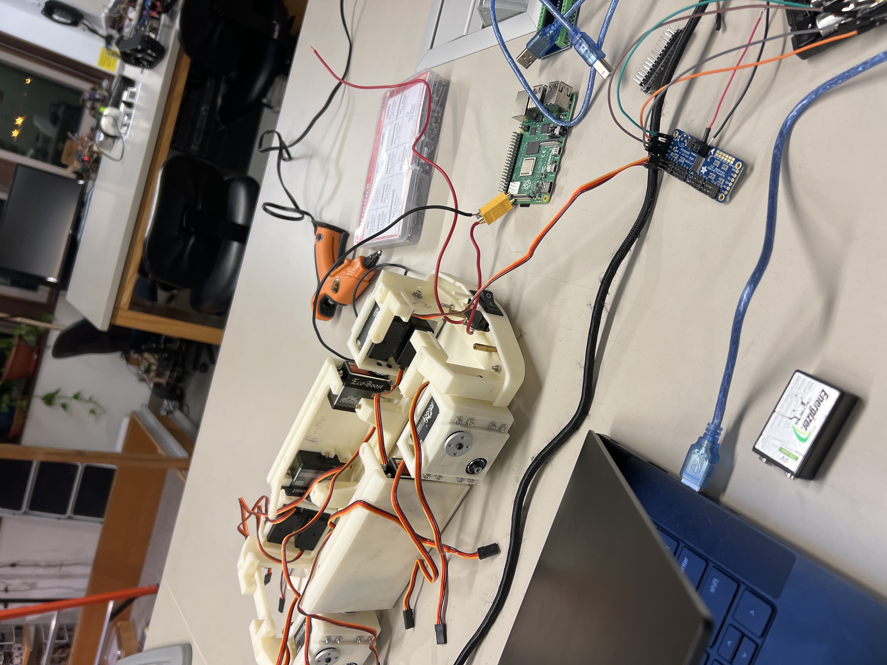
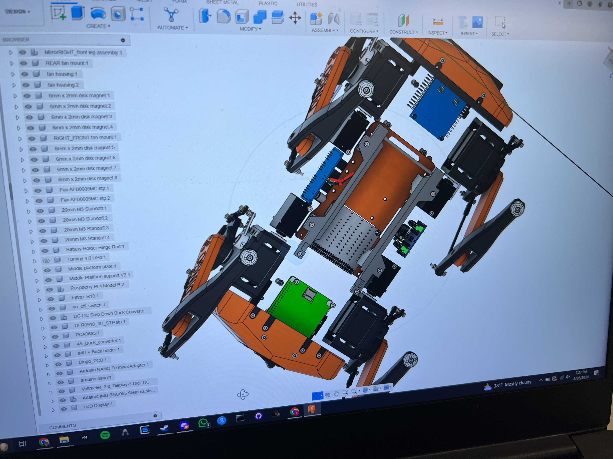
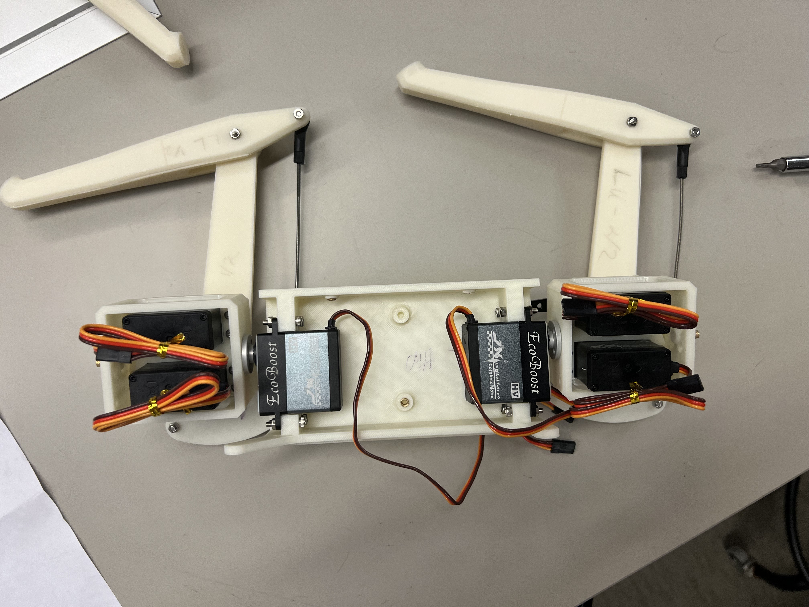
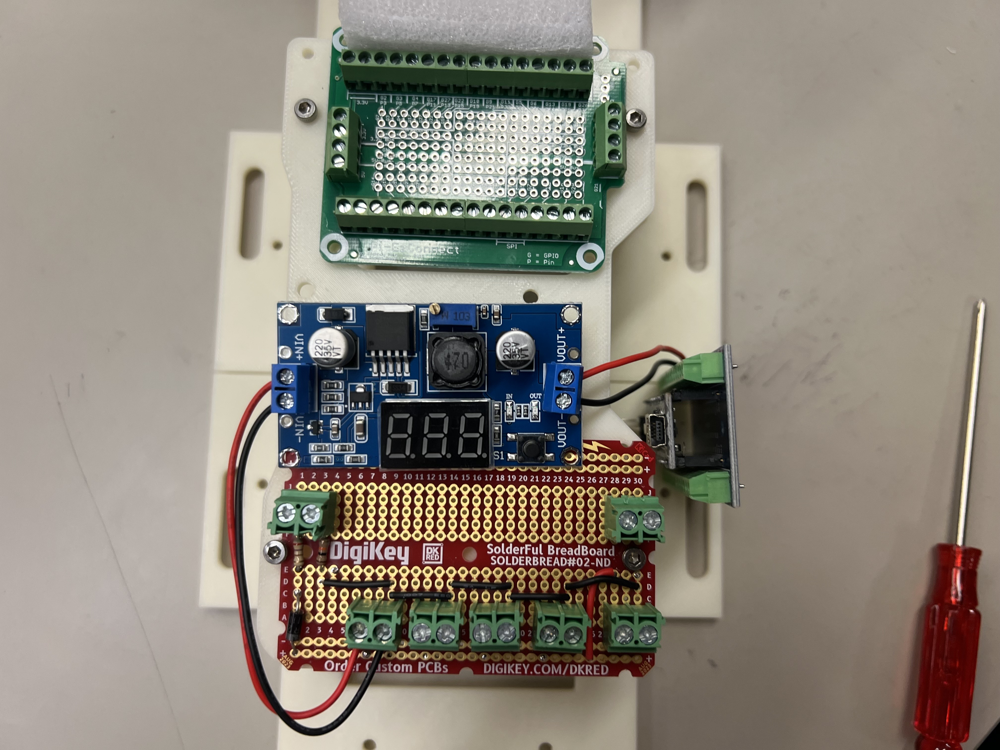

Team Members: Jay Nash, Russell Kosovsky
This project focuses on rebuilding the dingo quadruped as it is currently in an unfinished state. We plan to fully rebuild the dingo into a platform for use in gait evolution and possibly other forms of objective seeking/evolved behavior. The dingo has a simulated environment that will be used to train the gait in a simulated environment before applying that learned behavior to the real world. We are looking into using Punctuated Anytime Learning for this process in order to better translate simulated behavior to real world behavior. Additionally, we would like to implement a variety of types of genetic algorithms to optimize the gait/behavior in order to determine what type of genetic algorithm works best for a problem. For example, we may use a cyclic genetic algorithm with punctuated anytime learning to evolve a gait, and then use a more standard GA to evolve the behavior of the robot. This last objective might not be entirely feasible but it is something that we discussed and thought might be interesting to look into.
Details about team members and their roles...
Determined needed parts and locations for installation of electronics into the body of the dingo. Installed Arduino Nano, ServoBoard, Switches, Rasberry Pi, and custom PCB (Photo 9, 10)
Ordered and installed 2200uF capacitor into ServoBoard and tested motor actuation directly via Arduino Nano
Rebuilt the dingo to only include the minimum amount of parts to test servos and wiring (Ardiuno Nano, ServoBoard, and a battery pack)
Decided to abandon the custom PCB and power delivery system and directly power components from a LiPO battery and buck converters (Photo 5)
Uninstalled the Arduino Nano and switched controllers to a Rasberry Pi, while the original Dingo uses a Nano, the I2C bus was unable to detect it. Because the Nano only monitors the voltage of the battery in order to avoid completely discharging it, we decided to use a manual battery alarm instead and remove the Nano from the ROS configuration. (Photo 7)
Installed Ubuntu 23.10 on the Rasberry Pi, as well as installing and building ROS packages for both the Dingo control and to interface with the LiDAR (Video 1)
Modified Dingo input controllers to get between the keyboard controller and the dingo itself to inject movement commands
Installed LiDAR onto the Dingo and tested how it would output information in order to parse it for the dingo controller to use (Photos 2,4)
Created a ROS controller node that listens to the LiDAR publisher and sends instructions to the modified keyboard controller
After testing the currently installed buck converters, it was apparent that the buck converters we are using are unable to push the current we need and instead drops the voltage below what the servos can operate on
Created a 20A buck converter by wiring 2A buck converters in parallel and observed a much stronger gait, however this jerry-rigged 20A converted quickly failed and was deemed too unstable to continue using (Photo 6)
Finished control program for the dingo, the controller now actively reads the LiDAR output and makes movement decisions to avoid walls (Video 2)
We require a new 20A buck converter in order to drive the servos effectively. However once that is installed the dingo will be able to be used for various research projects for learning behavior of an autonomus robot and training machine learning algorithms to interpret LiDAR outputs.
Photo 1: Birdseye view 1
Photo 2: LiDAR image 1
Photo 3: Birdseye view 2
Photo 4: LiDAR image 2
Photo 5:
Photo 6:
Photo 7:
Photo 8:
Photo 9:
Photo 10:
Video 1: Example of standard walking gait
Video 2: Example of gait response to LiDAR detection
blah blah blah blah blah blah...